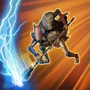

Mercenary Guard Droid (B1)
A heavily armed security droid employed by mercenaries to protect their interests
A heavily armed security droid employed by mercenaries to protect their interests
Deal Physical damage to target enemy. Bounty Hunter Mercenary allies gain Offense Up for 1 turn. If there is any version of Embo present in the allied Leader slot, he assists and gains Speed Up for 1 turn.

Deal Physical damage to target enemy and Blind them for 1 turn. Bounty Hunter Mercenary allies gain Protection Up (40%) for 2 turns. If the ally in the Leader slot is Embo & Keibu, Bounty Hunter Mercenary allies gain 25% Offense (stacking, max 100%) until the end of battle and Stagger all enemies for 2 turns.
Mercenary Guard Droid (B1) has no Protection, 1 Health, 25 stacks of Mercenary Battalion, and can't be defeated or destroyed while they have Mercenary Battalion. If the ally in the Leader slot is Embo & Keibu, Mercenary Guard Droid has 50 stacks of Mercenary Battalion instead. At the start of battle, if Embo & Keibu is the ally in the Leader slot, the first time Mercenary Battalion stacks reach 20 or lower, Mercenary Guard Droid gains 100 stacks of Mercenary Battalion.
When all stacks of Mercenary Battalion expire, Mercenary Guard Droid is immediately destroyed. Mercenary Guard Droid is immune to Damage Over Time and their Max Health and Max Protection can't be increased.
When Mercenary Guard Droid takes damage, they dispel all debuffs on themselves and lose 6 stacks of Mercenary Battalion (max 18 per turn). If they are Taunting, lose 3 stacks instead. At the start of Mercenary Guard Droid's turn, they gain 3 stacks of Mercenary Battalion. Mercenary Guard Droid has +5 stacks of Mercenary Battalion for each Relic Amplifier level they have. Mercenary Guard Droid can't gain Spare Parts and can't be revived.
Mercenary Battalion: Each stack grants Mercenary Guard Droid +0.5% Potency and Mercenary allies +0.5% Critical Avoidance and Defense
At the start of battle, Mercenary Guard Droid taunts for 1 turn, which can't be dispelled, and all other Bounty Hunter Mercenary allies gain 120% Defense until the end of battle.
Whenever a Bounty Hunter Mercenary ally gains a bonus turn, Mercenary Guard Droid gains 3 stacks of Mercenary Battalion and Taunts for 1 turn, which can't be dispelled. Whenever Mercenary Guard Droid uses an ability, they Taunt for 1 turn. If they are Taunting, they gain 2 stacks of Mercenary Battalion instead.
Omicron Boost : While in 3v3 Grand Arenas: All other Bounty Hunter Mercenary allies gain 100% Defense until the end of battle. The first time a Bounty Hunter Mercenary ally falls below 25% Health, they recover 100% Health and gain Damage Immunity for 1 turn.

At the start of battle, Mercenary Guard Droid gains 1 stack of Soldier of Fortune for each Relic Amplifier level they have until the end of battle. Whenever Mercenary Guard Droid is damaged while Taunting, they gain 1 stack of Soldier of Fortune.
Whenever Mercenary Guard Droid takes damage while they are not Taunting, they lose 5 stacks of Soldier of Fortune.
At the start of each Bounty Hunter Mercenary ally's turn, they gain 5% Defense Penetration (stacking) and 5% Tenacity (stacking) per stack of Soldier of Fortune Mercenary Guard Droid have until the start of their next turn.